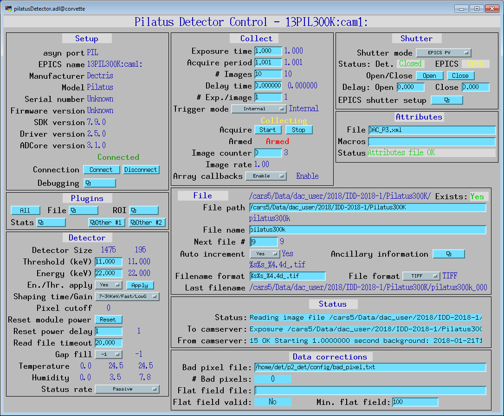
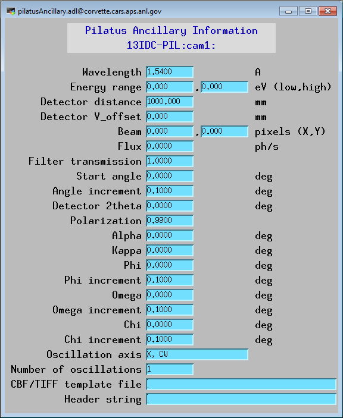
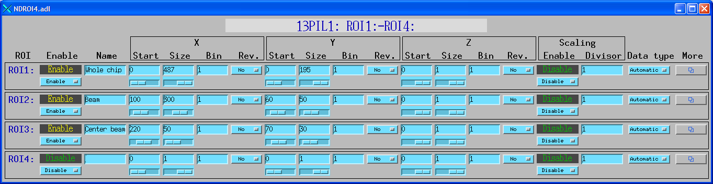
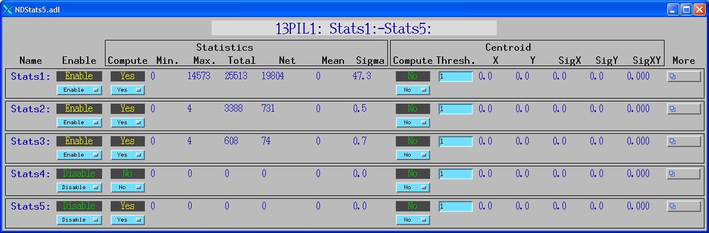
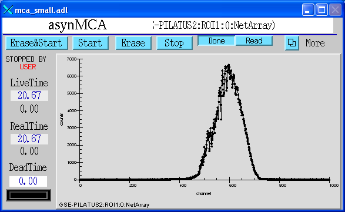
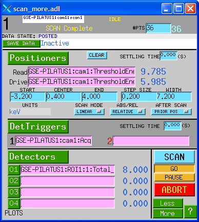
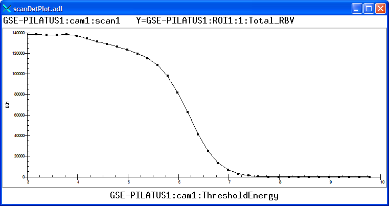
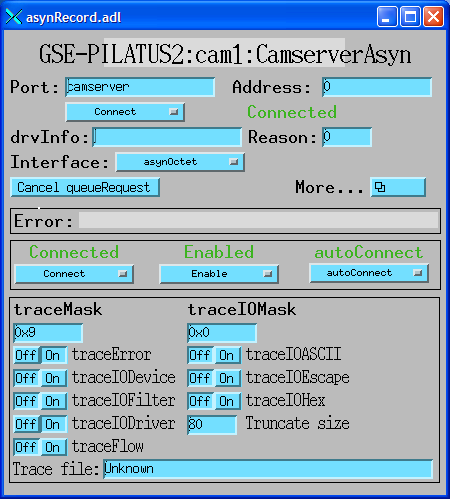
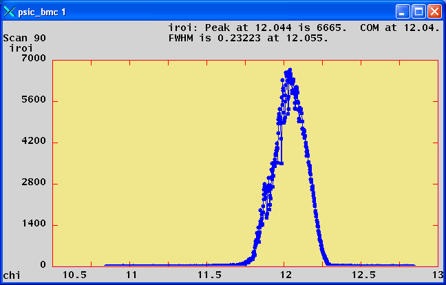

This is an areaDetector driver for the Pilatus pixel array
detectors from Dectris.
The interface to the detector is via a TCP/IP socket interface to the
camserver server that Dectris provides. The camserver program must
be started before the areaDetector software is started, typically by
running the camonly script provided by Dectris.
The camserver program saves the data to disk as TIFF or CBF files. The
areaDetector software reads these disk files in order to read the data,
because camserver does not provide another mechanism to access the data.
If camserver is saving TIFF files then the driver reads the
TIFFImageDescription tag from the TIFF file. This is a long string that
camserver writes to the file containing all of the detector settings,
including threshold, energy, etc. The driver adds this information to
the NDArray using an NDAttribute called TIFFImageDescription. The
NDFileTIFF plugin in ADCore R2-6 was changed to write this complete
attribute to the TIFFImageDescription tag in the new TIFF file. It will
also be written by the NDFileNetCDF, NDFileHDF5, and NDFileNexus
plugins. However these plugins are currently limited to 256 character
string attributes, so some of the information will be lost because the
string is longer than 256 characters.
The following table describes how the Pilatus driver implements some of
the standard driver parameters.
Parameter Definitions in pilatusDetector.cpp and EPICS Record Definitions in pilatus.template
Parameter index variable
EPICS record name
Description
ADTriggerMode
$(P)$(R)TriggerMode
The driver redefines the choices for the ADTriggerMode parameter (record $(P)$(R)TriggerMode) from ADDriver.h. The choices for the Pilatus are: Internal (external signal not used) ExternalEnable (count while external trigger line is high, readout on high to low transition) ExternalTrigger (begin acquisition sequence on high to low transition of external trigger line) MultipleExternalTrigger (high to low transition on external signal triggers a single acquisition for the programmed exposure time) Alignment (collect images as fast as exposure time and readout permit, images written to a temporary file)
The first 4 modes correspond directly to the camserver commands Exposure, ExtEnable, ExtTrigger, and ExtMTrigger respectively.
Alignment mode uses the Exposure command as well, but continuously takes images into the same temporary file (alignment.tif).
ADAcquireTime
$(P)$(R)AcquireTime
Controls the acquisition time in all modes except External Enable. In External Enable mode the timing is controlled entirely by the external trigger line.
However, even in ExternalEnable mode AcquireTime is used by camserver and by the driver to estimate how long the acquisition will take.
Hardware timeouts will occur if the actual time to acquire differs significantly from the estimated time based on AcquireTime and AcquirePeriod.
ADNumImages
$(P)$(R)NumImages
Controls the number of images to acquire. It applies in all trigger modes except Alignment.
ADAcquirePeriod
$(P)$(R)AcquirePeriod
Controls the exposure period in seconds in Internal or External Trigger modes when NumImages >1.
In External Enable mode the timing is controlled entirely by the external trigger line.
However, even in ExternalEnable mode AcquirePeriod is used by camserver and by the driver to estimate how long the acquisition will take.
Hardware timeouts will occur if the actual time to acquire differs significantly from the estimated time based on AcquireTime and AcquirePeriod.
ADNumExposures
$(P)$(R)NumExposures
Controls the number of exposures per image. It is most useful in External Enable mode, but it can be set in any mode.
ADAcquire
$(P)$(R)Acquire
Controls the acquisition. Setting this to 1 starts image acquisition. The driver sets the record to 0 when acquisition is complete.
This means an entire acquisition series if NImages >1. Setting this to 0 aborts an acquisition.
If the driver was currently acquiring imges then this record will cause the “Stop” and “K” (Kill) commands to be sent to camserver.
NDFilePath
$(P)$(R)FilePath
Controls the path for saving images.
It must be a valid path for camserver and for the areaDetector driver, which is normally running in an EPICS IOC.
If camserver and the EPICS IOC are not running on the same machine then soft links will typically be used to make the paths look identical.
NDFileTemplate
$(P)$(R)FileTemplate
camserver uses the file extension to determine what format to save the files in.
The areaDetector Pilatus driver only supports TIFF and CBF files, so the extension should be .tif or .cbf.
When saving multiple images (NImages>1) camserver has its own rules for creating the names of the individual files. The rules are as follows.
The name constructed using the algorithm described for NDFileTemplate under File Saving Parameters is used as a basename.
The following examples show the interpretation of the basename.
The numbers following the last ‘_’ are taken as a format template, and as a start value. The minimum format is 3; there is no maximum; the default is 5. The format is also constrained by the requested number of images.
It is useful to load and enable an NDPluginStats plugin that gets its
data from the Pilatus driver. The MaxValue_RBV PV for that plugin can be
monitored to make sure that the 20-bit limit of 1,048,575 is not being
approached in any pixel.
The Pilatus driver implements the following parameters in addition to
those in asynNDArrayDriver.h and ADDriver.h:. Note that to reduce the
width of this table the parameter index variable names have been split
into 2 lines, but these are just a single name, for example
PilatusDelayTime.
Parameter Definitions in pilatusDetector.cpp and EPICS Record Definitions in pilatus.template*
Description
drvInfo string
EPICS record name
EPICS record type
Delay in seconds between the external trigger and the start of image acquisition. It only applies in External Trigger mode
DELAY_TIME
$(P)$(R)DelayTime
ao
Threshold energy in keV. camserver uses this value to set the discriminators in each pixel.
It is typically set to the incident x-ray energy ($(P)$(R)Energy), but sometimes other values may be preferable.
Apply the threshold value.
Setting the threshold can be a time consuming operation, so if ThresholdAutoApply is No then ThresholdApply must be processed to actually send the threshold to camserver.
THRESHOLD_APPLY
$(P)$(R)ThresholdApply
busy
Apply the threshold value.
Setting the threshold can be a time consuming operation, so if ThresholdAutoApply is No then ThresholdApply must be processed to actually send the threshold to camserver.
THRESHOLD_APPLY
$(P)$(R)ThresholdApply
busy
Automatically apply the threshold value whenever it changes.
Setting the threshold can be a time consuming operation, so if ThresholdAutoApply is No then ThresholdApply must be processed to actually send the threshold to camserver.
If it is Yes then the threshold value will be sent to camserver whenever it is changed.
X-ray energy in keV. This is used by camserver to calculate the proper flat field corrrection.
If Energy is 0 then the energy value sent to camserver is ThresholdEnergy*2.
ENERGY
$(P)$(R)Energy, $(P)$(R)Energy_RBV
ao, ai
The value that camserver should write to the data file for the gaps between pixels in the detector. Choices are -2, 0, and -1.
GAP_FILL
$(P)$(R)GapFill, $(P)$(R)GapFill_RBV
mbbo, mbbi
Gain menu. Controls the value of Vrf, which determines the shaping time and gain of the input amplifiers. The allowed values are:
Fast/Low Fastest shaping time (~125ns) and lowest gain.
Medium/Medium Medium shaping time (~200 ns) and medium gain.
Slow/High Slow shaping time (~400 ns) and high gain.
Slow/Ultrahigh Slowest peaking time (? ns) and highest gain.
This is only used on older Pilatus detectors, not the newer ones.
N/A
$(P)$(R)GainMenu
mbbo
Flag to indicate when the Pilatus is ready to accept external trigger signals (0=not ready, 1=ready). This should be used by clients to indicate when it is OK to start sending trigger pulses to the Pilatus. If pulses are send before Armed=1 then the Pilatus may miss them, leading to DMA timeout errors from camserver
ARMED
$(P)$(R)Armed
bi
Processing this record sends the “ResetModulePower delayTime” command to camserver.
This cycles the high voltage and other detector supply voltages.
This is particularly useful with the CdTe detectors when they have been exposed to a very strong signal.
Cycling the power can erase the memory effects of oversaturation.
The delayTime controls the amount of time to wait after turning off the power before turning it back on again.
It is set by the ResetPowerTime record.
RESET_POWER
$(P)$(R)ResetPower
bo
This record controls the number of seconds to wait after turning off the power before turning it back on again when the ResetPower record is processed.
RESET_POWER_TIME
$(P)$(R)ResetPower, $(P)$(R)ResetPower_RBV
bo, bi
Timeout in seconds when reading a TIFF or CBF file.
It should be set to several seconds, because there can be delays for various reasons.
One reason is that there is sometimes a delay between when an External Enable acquisition is started and when the first external pulse occurs.
Another is that it can take some time for camserver processes to finish writing the files.
IMAGE_FILE_TMOT
$(P)$(R)ImageFileTmot
ao
Name of a file to be used to replace bad pixels.
If this record does not point to a valid bad pixel file then no bad pixel mapping is performed.
The bad pixel map is used before making the NDArray callbacks. It does not modify the data in the files that camserver writes.
This is a simple ASCII file with the following format:
The X and Y coordinates range from 0 to NXPixels-1 and NYPixels-1.
Up to 100 bad pixels can be defined.
The bad pixel mapping simply replaces the bad pixels with another pixel’s value.
It does not do any averaging.
It is felt that this is sufficient for the purpose for which this driver was written, namely fast on-line viewing of ROIs and image data.
More sophisticated algorithms can be used for offline analysis of the image files themselves.
The following is an example bad pixel file for a GSECARS detector:
The number of bad pixels defined in the bad pixel file. Useful for seeing if the bad pixel file was read correctly.
NUM_BAD_PIXELS
$(P)$(R)NumBadPixels
longin
Name of a file to be used to correct for the flat field.
If this record does not point to a valid flat field file then no flat field correction is performed.
The flat field file is simply a TIFF or CBF file collected by the Pilatus that is used to correct for spatial non-uniformity in the response of the detector.
It should be collected with a spatially uniform intensity on the detector at roughly the same energy as the measurements being corrected.
When the flat field file is read, the average pixel value (averageFlatField) is computed using all pixels with intensities > PilatusMinFlatField.
All pixels with intensity <PilatusMinFlatField in the flat field are replaced with averageFlatField.
When images are collected before the NDArray callbacks are performed the following per-pixel correction is applied:
The mimimum valid intensity in the flat field.
This value must be set > 0 to prevent divide by 0 errors.
If the flat field was collected with some pixels having very low intensity then this value can be used to replace those pixels with the average response.
MIN_FLAT_FIELD
$(P)$(R)MinFlatField
longout
This record indicates if a valid flat field file has been read. 0=No, 1=Yes.
FLAT_FIELD_VALID
$(P)$(R)FlatFieldValid
bi
MX wavelength to write to CBF and TIFF image header.
WAVELENGTH
$(P)$(R)Wavelength
ao
MX energy range low value to write to CBF and TIFF image header.
ENERGY_LOW
$(P)$(R)EnergyLow
ao
MX energy range high value to write to CBF and TIFF image header.
ENERGY_HIGH
$(P)$(R)EnergyHigh
ao
MX detector distance to write to CBF and TIFF image header.
DET_DIST
$(P)$(R)DetDist
ao
MX detector vertical offset to write to CBF and TIFF image header.
DET_VOFFSET
$(P)$(R)DetVOffset
ao
MX beam X to write to CBF and TIFF image header.
BEAM_X
$(P)$(R)BeamX
ao
MX beam Y to write to CBF and TIFF image header.
BEAM_Y
$(P)$(R)BeamY
ao
MX flux to write to CBF and TIFF image header.
FLUX
$(P)$(R)Flux
ao
MX filter transmission to write to CBF and TIFF image header.
FILTER_TRANSM
$(P)$(R)FilterTransm
ao
MX start angle to write to CBF and TIFF image header.
When saving multiple images (ADNumImages>1) camserver will automatically increment the field in the image header by PilatusAngleIncr for each image.
START_ANGLE
$(P)$(R)StartAngle
ao
MX angle increment to write to CBF and TIFF image header.
When saving multiple images (ADNumImages>1) camserver will automatically increment the field corresponding to PilatusStartAngle
in the image header by this value for each image.
ANGLE_INCR
$(P)$(R)AngleIncr
ao
MX detector 2theta to write to CBF and TIFF image header.
DET_2THETA
$(P)$(R)Det2theta
ao
MX polarization to write to CBF and TIFF image header.
POLARIZATION
$(P)$(R)Polarization
ao
MX alpha to write to CBF and TIFF image header.
ALPHA
$(P)$(R)Alpha
ao
MX kappa to write to CBF and TIFF image header.
KAPPA
$(P)$(R)Kappa
ao
MX phi to write to CBF and TIFF image header.
PHI
$(P)$(R)Phi
ao
MX phi increment to write to CBF and TIFF image header
PHI_INCR
$(P)$(R)PhiIncr
ao
MX chi to write to CBF and TIFF image header.
CHI
$(P)$(R)Chi
ao
MX chi increment to write to CBF and TIFF image header
CHI_INCR
$(P)$(R)ChiIncr
ao
MX omega to write to CBF and TIFF image header.
OMEGA
$(P)$(R)Omega
ao
MX omega increment to write to CBF and TIFF image header
OMEGA_INCR
$(P)$(R)OmegaIncr
ao
MX oscillation axis text, up to 18 characters in length, to write to CBF and TIFF image header.
OSCILL_AXIS
$(P)$(R)OscillAxis
stringout
MX number of oscillations to write to CBF and TIFF image header.
NUM_OSCILL
$(P)$(R)NumOscill
longout
Template file to be used to obtain all of the MX parameters above. Set the name of this file to “0” to disable the template file.
CBFTEMPLATEFILE
$(P)$(R)CbfTemplateFile
waveform
Header string to write in the COMMENT field of the CBF file.
HEADERSTRING
$(P)$(R)HeaderString
waveform
Maximum possible count rate per pixel.
PIXEL_CUTOFF
$(P)$(R)PixelCutOff_RBV
ai
Temperature readout 0.
TH_TEMP_0
$(P)$(R)Temp0_RBV
ai
Temperature readout 1.
TH_TEMP_1
$(P)$(R)Temp1_RBV
ai
Temperature readout 2.
TH_TEMP_2
$(P)$(R)Temp2_RBV
ai
Humidity readout 0.
TH_HUMID_0
$(P)$(R)Humid0_RBV
ai
Humidity readout 1.
TH_HUMID_1
$(P)$(R)Humid1_RBV
ai
Humidity readout 2.
TH_HUMID_2
$(P)$(R)Humid2_RBV
ai
Version of TVX and camserver. This record is redundant with the SDKVersion_RBV record added in ADCore R2-6, which should be used instead.
TVXVERSION
$(P)$(R)TVXVersion_RBV
stringin
asyn record to control debugging communication with camserver.
Setting the CNCT field in this record to Disconnect causes the drvAsynIPPort server to disconnect from camserver.
This can be used to allow another program, such as TVX, to temporarily take control of camserver, without restarting the EPICS IOC.
Set CNCT to Connect to reconnect the IOC to camserver, or simply process any record which communicates with camserver,
because the driver will automatically reconnect.
For details on the meaning of the parameters to this function refer to
the detailed documentation on the pilatusDetectorConfig function in the
pilatusDetector.cpp documentation
and in the documentation for the constructor for the
pilatusDetector class.
The following startup script is provided with ADPilatus.
< envPaths
errlogInit(20000)
dbLoadDatabase("$(TOP)/dbd/pilatusDetectorApp.dbd")
pilatusDetectorApp_registerRecordDeviceDriver(pdbbase)
# Prefix for all records
epicsEnvSet("PREFIX", "13PIL1:")
# The port name for the detector
epicsEnvSet("PORT", "PIL")
# The queue size for all plugins
epicsEnvSet("QSIZE", "20")
# The maximim image width; used for row profiles in the NDPluginStats plugin
epicsEnvSet("XSIZE", "487")
# The maximim image height; used for column profiles in the NDPluginStats plugin
epicsEnvSet("YSIZE", "195")
# The maximum number of time seried points in the NDPluginStats plugin
epicsEnvSet("NCHANS", "2048")
# The maximum number of frames buffered in the NDPluginCircularBuff plugin
epicsEnvSet("CBUFFS", "500")
# The search path for database files
epicsEnvSet("EPICS_DB_INCLUDE_PATH", "$(ADCORE)/db")
###
# Create the asyn port to talk to the Pilatus on port 41234.
drvAsynIPPortConfigure("camserver","gse-pilatus1:41234")
# Uncomment the following to enable asynTrace on the camserver port
#asynSetTraceIOMask("camserver",0,2)
#asynSetTraceMask("camserver",0,9)
# Set the input and output terminators.
asynOctetSetInputEos("camserver", 0, "\x18")
asynOctetSetOutputEos("camserver", 0, "\n")
pilatusDetectorConfig("$(PORT)", "camserver", $(XSIZE), $(YSIZE), 0, 0)
dbLoadRecords("$(ADPILATUS)/db/pilatus.template","P=$(PREFIX),R=cam1:,PORT=$(PORT),ADDR=0,TIMEOUT=1,CAMSERVER_PORT=camserver")
# Create a standard arrays plugin
NDStdArraysConfigure("Image1", 5, 0, "$(PORT)", 0, 0)
dbLoadRecords("$(ADCORE)/db/NDStdArrays.template", "P=$(PREFIX),R=image1:,PORT=Image1,ADDR=0,TIMEOUT=1,NDARRAY_PORT=$(PORT),TYPE=Int32,FTVL=LONG,NELEMENTS=94965")
# Load all other plugins using commonPlugins.cmd
< $(ADCORE)/iocBoot/commonPlugins.cmd
set_requestfile_path("$(ADPILATUS)/pilatusApp/Db")
# Uncomment to enable asynTrace on the driver port
#asynSetTraceMask("$(PORT)",0,255)
iocInit()
# save things every thirty seconds
create_monitor_set("auto_settings.req", 30,"P=$(PREFIX)")
The following show the MEDM screens that are used to control the Pilatus
detector. Note that the general purpose screen ADBase.adl can be used,
but it exposes many controls that are not applicable to the Pilatus.
pilatusDetector.adl is the main screen used to control the Pilatus
driver.

pilatusAncillary.adl is the screen used to control define the
metadata that will be written to the Pilatus data file.

NDROI4.adl is used to define the ROIs. In this example there are 3
valid ROIs defined. ROI 1 is the entire detector, ROI 2 is a 300x50
rectangle starting at [100,60], and ROI 3 is a 50x30 rectangle starting
at [220,70].

NDStats5.adl is used to display the statistics in the ROIs defined
above.

mca.adlormca_small.adl can be used to plot the net or total counts
in an ROI when NImages>1. In this example the plot is the net counts in
ROI 1 as the diffractometer chi was scanned +- 1 degree with 1000 points
at .02 seconds/point. This was done with the SPEC command:
lupchi-111000.02
using trajectory scanning on a Newport kappa diffractometer. This was a
compound motor scan with the Newport XPS putting out pulses every .02
seconds. These pulses triggered the Pilatus in External Enable mode. The
Pilatus driver read each TIFF file as it was created and updated this
plot every 0.2 seconds. The total time to collect this scan with 1000
images was 20.8 seconds.

scan_more.adl is used to define a scan. In this example the sscan
record is set up to scan the ThresholdEnergy PV and to collect the total
counts in ROI2, which was defined to include the entire detector.

scanDetPlot.adl is used to plot the results of a scan after it is
complete. In this example the total counts in ROI 1 are plotted as a
function of the ThresholdEnergy as it was scanned from 3000 to 10000 eV
in 250 eV steps. The source was Fe55, and the cut-off is at 6 keV, as
expected for the Mn Ka and Mn Kb x-rays that this source produces.

asynRecord.adl is used to control the debugging information printed
by the asyn TCP/IP driver for camserver (asynTraceIODriver).

asynOctet.adl can be used to send any command to camserver and
display the response. It can be loaded from the More menu in
asynRecord.adl above.
At the GSECARS beamlines (13-ID-C and 13-BM-C) at the APS we use SPEC to
control our Newport diffractometers. We have added and modified SPEC
macros to use the pilatusDetector areaDetector driver to treat the
Pilatus detector as a SPEC counter. This works in both traditional
step-scanning mode, as well as in trajectory
scanning
mode. Here are some snippets from the SPEC macros for the Pilatus. We
can supply the source files on request.:
# need some more globals (kludge)globalPILATUS_ROI_PVglobalPILATUS_ROI_ARRAY_PVglobalPILATUS_ROI_ARRAY_START_PVglobalPILATUS_ROI_ARRAY_NUSE_PVglobalPILATUS_ROI_ARRAY_ACQ_PVglobalPILATUS_IMGPATH_PVglobalPILATUS_FNAME_PVglobalPILATUS_FILENUMBER_PVglobalPILATUS_FILEFORMAT_PVglobalPILATUS_EXPSRTM_PVglobalPILATUS_NFRAME_PVglobalPILATUS_EXPPRD_PVglobalPILATUS_NEXPFRM_PVglobalPILATUS_ACQ_PVglobalPILATUS_ARMED_PVglobalPILATUS_ABORT_PVglobalPILATUS_ACQMODE_PVglobalPILATUS_READOUT_TIMEglobalPILATUS_ROI_0_MinX_PVglobalPILATUS_ROI_0_SizeX_PVglobalPILATUS_ROI_0_MinY_PVglobalPILATUS_ROI_0_SizeY_PV###############################################################def_setup_img'{...# PILATUS_PREFIX detector name i.e. (GSE-PILATUS1:)if(PILATUS_PREFIX=="")PILATUS_PREFIX="GSE-PILATUS1:"PILATUS_PREFIX=getsval("Enter PILATUS detector name i.e. GSE-PILATUS1:",PILATUS_PREFIX)# PILATUS_DET_PREFIX is the pv used by areaDetector to identify a specific detector.# When only one detector is used it is usally (cam1:)if(PILATUS_DET_PREFIX=="")PILATUS_DET_PREFIX="cam1:"PILATUS_DET_PREFIX=getsval("Enter PILATUS specific detector name i.e. cam1:",PILATUS_DET_PREFIX)# PILATUS_ROI_PREFIX is the pv used by areaDetector to identify a specific a ROI plugin.# When only one ROI plugin is used it is usally (ROI1:)if(PILATUS_ROI_PREFIX=="")PILATUS_DET_PREFIX="ROI1:"PILATUS_ROI_PREFIX=getsval("Enter PILATUS ROI plugin name i.e. ROI1:",PILATUS_ROI_PREFIX)if(PILATUS_MOUNT=="")PILATUS_MOUNT="cars5/Data"PILATUS_MOUNT=getsval("Enter mount point relative to camserver home directory",PILATUS_MOUNT)if(PILATUS_SPEC_MOUNT=="")PILATUS_SPEC_MOUNT="cars5/Data"PILATUS_SPEC_MOUNT=getsval("Enter mount point relative to spec home directory",PILATUS_SPEC_MOUNT)...PILATUS_ROI_PV=PILATUS_PREFIXPILATUS_ROI_PREFIX"0:Net_RBV"PILATUS_ROI_ARRAY_PV=PILATUS_PREFIXPILATUS_ROI_PREFIX"0:NetArray"PILATUS_ROI_ARRAY_START_PV=PILATUS_PREFIXPILATUS_ROI_PREFIX"0:NetArrayEraseStart"PILATUS_ROI_ARRAY_NUSE_PV=PILATUS_PREFIXPILATUS_ROI_PREFIX"0:NetArray.NUSE"PILATUS_ROI_ARRAY_ACQ_PV=PILATUS_PREFIXPILATUS_ROI_PREFIX"0:NetArray.ACQG"PILATUS_IMGPATH_PV=PILATUS_PREFIXPILATUS_DET_PREFIX"FilePath"PILATUS_FNAME_PV=PILATUS_PREFIXPILATUS_DET_PREFIX"FileName"PILATUS_FILENUMBER_PV=PILATUS_PREFIXPILATUS_DET_PREFIX"FileNumber"PILATUS_FILEFORMAT_PV=PILATUS_PREFIXPILATUS_DET_PREFIX"FileTemplate"PILATUS_EXPSRTM_PV=PILATUS_PREFIXPILATUS_DET_PREFIX"AcquireTime"PILATUS_NFRAME_PV=PILATUS_PREFIXPILATUS_DET_PREFIX"NumImages"PILATUS_EXPPRD_PV=PILATUS_PREFIXPILATUS_DET_PREFIX"AcquirePeriod"PILATUS_NEXPFRM_PV=PILATUS_PREFIXPILATUS_DET_PREFIX"NumExposures"PILATUS_ACQ_PV=PILATUS_PREFIXPILATUS_DET_PREFIX"Acquire"PILATUS_ARMED_PV=PILATUS_PREFIXPILATUS_DET_PREFIX"Armed"PILATUS_ABORT_PV=PILATUS_PREFIXPILATUS_DET_PREFIX"Acquire"PILATUS_ACQMODE_PV=PILATUS_PREFIXPILATUS_DET_PREFIX"TriggerMode"PILATUS_THRESHOLD_PV=PILATUS_PREFIXPILATUS_DET_PREFIX"ThresholdEnergy"PILATUS_ROI_0_MinX_PV=PILATUS_PREFIXPILATUS_ROI_PREFIX"0:MinX"PILATUS_ROI_0_SizeX_PV=PILATUS_PREFIXPILATUS_ROI_PREFIX"0:SizeX"PILATUS_ROI_0_MinY_PV=PILATUS_PREFIXPILATUS_ROI_PREFIX"0:MinY"PILATUS_ROI_0_SizeY_PV=PILATUS_PREFIXPILATUS_ROI_PREFIX"0:SizeY"PILATUS_ROI_0_BgdWidth_PV=PILATUS_PREFIXPILATUS_ROI_PREFIX"0:BgdWidth"...defepics_pilatus_count'{...# Call macro that creates and set the Pilatus path and filenameimg_full_filename# Setup exposure time, collection mode and number of framesepics_put(PILATUS_FILENUMBER_PV,NPTS,1)epics_put(PILATUS_NFRAME_PV,1,1)epics_put(PILATUS_ACQMODE_PV,0,1)# Internal triggerepics_put(PILATUS_EXPSRTM_PV,cnt_time_val,1)epics_put(PILATUS_NEXPFRM_PV,1,1)...# hit the triggersepics_put(PILATUS_ACQ_PV,1)epics_put(sc_cnt_pv,1)# wait for scaler and Pilatus AQG to finishstatus=1sc_done=FALSEimg_done=FALSEdata_done=FALSEwhile(status){# is the scalar doneif(epics_get(sc_cnt_pv)=="Done"){sc_done=TRUE;#p "scaler done"}# is the pilatus doneif(epics_get(PILATUS_ACQ_PV)=="Done"){img_done=TRUE;#p "image collection done"}if((sc_done==TRUE)&&(img_done==TRUE))break;sleep(0.01)}# use the get_counts routine to read the scalers# note get_counts also calls user_getcounts# thats where the rois get read.get_counts}'defuser_getcounts'{...# using image_count routine}elseif(EPICS_COUNT==4){S[iroi]=0S[iroi]=epics_get(PILATUS_ROI_PV)
The following measurements were done to demonstrate the performance that
can be obtained with the areaDetector Pilatus driver.
AcquireMode=Internal, NumImages=1000, AcquireTime=.005,
AcquirePeriod=.01, NumExposures=1. The time to collect this series
should be exactly 10.0 seconds. The actual time was measured using
the EPICS camonitor program. It printed the time when acquisition was
started (Acquire changed to Acquire=1) and when acquisition was
complete (Acquire changed to Done=0). The time was 10.022 seconds.
This includes the time for camserver to save all 1000 images to disk
(366 MB), and for the driver to read each file, correct the bad
pixels and flat field, compute the ROIs, and post the ROIs to EPICS.
It also posted all of the images to EPICS. The total additional time
was less than 0.03 seconds for all 1000 images.
AcquireMode=Internal, NImages=1, ExposureTime=.01, NExposures=1. An
EPICS sscan record was used to collect 1000 points. There were no
positioner PVs (to eliminate motor overhead). The only detector
trigger was the Pilatus Acquire PV. The only detector PV was
ROI1:0:Total_RBV. In this mode camserver is being told to
individually collect each file. If there were no overhead then time
to collect this series should be exactly 10.0 seconds. The actual
time measured using the EPICS camonitor program was 45.514 seconds.
The overhead is thus 35.514 seconds, or 35 ms per point. In this
single-frame mode the driver is thus able to collect >20
images/second. For comparison, another measurement was done using the
same EPICS sscan record, but using a Joerger VSC16 scaler as the
detector trigger and detector. The preset time was also .01 seconds.
The elapsed time for a 1000 point scan was 16.068 seconds, so the
overhead was 6.068 seconds, or 6 ms per point.
AcquireMode=Ext. Enable, NImages=1000, NExposures=1. SPEC was used to
collect 1000 points using trajectory
scanning
mode with the Newport XPS motor controller. The following SPEC
command was used::
lupchi-111000.02
This tells SPEC to do a relative scan of the chi axis from -2 degrees
to +2 degrees with 1000 points at .015 seconds/point. On our kappa
diffractometer this entails a coordinated motion of the phi, kappa
and omega axes. The EPICS trajectory scanning software downloads the
non-linear trajectory that SPEC computes into the XPS controller,
which executes it. As the motors are moving the XPS outputs
synchronization pulses at the period of the collection time, .020
seconds in this case. These pulses are used as the external trigger
to the Pilatus. The time to execute this scan should be 20.0 seconds.
The actual time was 20.8 seconds, measured using camonitor on the
Acquire PV. Again, this includes the time for camserver to save all
1000 images to disk (366 MB), and for the Pilatus driver to read each
file, correct the bad pixels and flat field, compute the ROIs, and
post the ROIs to EPICS. It also posted all of the images to EPICS.
The total additional time was less than 0.8 seconds for all 1000
images. As soon as the acquisition was complete SPEC plotted the net
counts in the first ROI (containing the Bragg peak) as follows:

For comparison this identical scan was executed in traditional
step-scanning mode, where the motors stopped at each point in the
scan. The Pilatus was run in Internal mode with NumImages=1. The
total time for the scan was 870 seconds (more than 14 minutes),
compared to 20.8 seconds in trajectory mode. Most of this overhead is
the settling time for the motors, with only a small fraction due to
the Pilatus single-exposure mode. The trajectory scanning mode is
thus more than 50 times faster to execute the identical SPEC scan.
The Pilatus supports 3 types of external triggering. In External Trigger
mode (the camserver ExtTrigger command) the Pilatus uses the programmed
values of AcquireTime, AcquirePeriod, NImages and NExposures. It waits
for a single external trigger, then waits for Delay seconds and then
collects the entire sequence. It is very similar to Internal mode with
NImages>1, except that it waits for a trigger to begin collecting the
sequence.
In External Enable mode (the camserver ExtEnable command) the Pilatus
uses the external signal to control acquisition. Only NImages and
NExposures are used, AcquireTime and AcquirePeriod are not used. When
the signal is high the detector counts, and on the transition to low it
begins its readout.
In External MultiTrigger Mode (the camserver ExtMTrigger command) the
Pilatus uses the programmed AcquireTime, in addition to NImages and
NExposures. Each external trigger pulse causes the Pilatus to collect
one image at the programmed exposure time. This mode works well with a
trigger source like the Newport motor controllers or the SIS380x
multichannel scaler, that put out a short trigger pulse for each image.
One only needs to take care that the time between external trigger
pulses is at least 4msec longer than the programmed exposure time, to
allow time for the detector to read out before the next trigger pulse
arrives.
When using the External Enable mode, we use an inexpensive analog pulse
generator to convert the trigger pulses from the MM4005 and XPS to a
form suitable for External Enable mode with the Pilatus. This is the
solution we have developed that seems to be reliable:
The synchonization pulses from the Newport MM4005 or XPS controller
are input into the external next pulse (channel advance, control
signal 1) input of the SIS3801 multiscaler. This is the normal
configuration used for MCS counting without the Pilatus in trajectory
scanning mode.
The Copy In Progress (CIP) output of the SIS3801 (control signal 5)
is connected to the Trigger Input of a Tenma TGP110 10 MHz Pulse
Generator. CIP will output a pulse whenever the SIS3801 does a
channel advance, either in external mode with the motor controller
pulse input, or in internal timed channel advance mode. The TGP100
Pulse Generator is configured as follows:
Trigger Input connected to CIP output of SIS3801.
Triggered mode.
Complement output.
Pulse duration set with knobs to 3msec.
TTL Output connected to the External Input of the Pilatus.
With this configuration the SIS3801 CIP output is normally at 5V, and
outputs a 0V pulse 1 microsecond long. The trailing (rising) edge of
that pulse triggers the TGP110. The TGP110 TTL output is also
normally at 5V, and outputs a 0V pulse 3 milliseconds long each time
the SIS3801 pulses. That output is connected to the Pilatus External
Input. In External Enable mode when Pilatus External Input is high
the Pilatus is counting. When the External Input is low the Pilatus
reads out. The readout time is set via the knobs on the pulse
generator to be 3 ms, which is close to the minimum time allowed on
the Pilatus.
The Tenma TGP110 seems to be currently called a Tenma 72-6860, and lists
for about $350 new at Newark.
When we were initially testing the Pilatus in the lab, we had many
errors in External Enable mode, where it did not seem to be seeing the
external pulses. camserver would get DMA timeouts, and need to be
restarted. Dectris said these were happening because the cables on our
detector are longer than normal, and the voltage drop from the power
supply to the detector was leading to marginal voltage values. They
suggested shortening the cables or increasing the supply voltage
slightly. When moving the detector to the hutch these problems initially
went away. However, they then recurred, and we fixed the problem by
increasing the power supply voltage from 4.4 to 4.7 volts at the
detector.
Dectris has since informed me that they have increased the power supply
voltage on all new Pilatus systems, so this should no longer be an
issue.
The following are some current restrictions of the areaDetector Pilatus
driver:
Limited to TIFF or CBF file format. camserver can save files in other
formats, but the driver can currently only read TIFF and CBF files.
It uses the standard libtiff library to read the TIFF files, so it
should work on big or little endian machines, and should work with
uncompressed or compressed files. It has only been tested with
uncompressed files on a little-endian machine. It uses the CBFlib
library to read the CBF files.
The EPICS IOC should be run on the same computer as camserver. This
is not strictly necessary, and places a small additional load on the
CPU and network on that computer. However, we have found that TIFF
files are available to be read within 10ms after camserver says they
have been written if the IOC is running on the same machine as
camserver. This is true even if the files are being saved on a remote
NFS or SMB file system. On the other hand, if the IOC and camserver
are running on separate machines, then the filesystem can wait up to
1 second after camserver says the TIFF file has been written before
the IOC can read it. This is true even if the files are being written
to the computer that the IOC is running on! This 1 second delay is
often unacceptable for fast single-exposure scans, i.e. with
NImages=1.
The Pilatus driver keeps retrying to read each image file until the
modification date of the image file is after the time that the
acquisition was started. If it did not do this check then it could be
reading and displaying old files that happen to have the same name as
the current files being collected. This check requires that the
computer that is running the soft IOC must have its clock well
synchronized with the clock on the computer on which the files are
being written (i.e. the computer generating the file modification
time). If the clocks are not synchronized then the files may appear
to be stale when they are not, and the driver will time out. The
driver actually tolerates up to 10 second clock skew betweeen the
computers but any more than this may lead to problems.
Setting Acquire to 0 does not always stop acquisition immediately
because camserver does not reliably implement the “K” command to stop
an exposure sequence. In particular with NumImages>1 camserver seems
to often ignore the K command completely, even with exposure
times/periods as long as 10 seconds. With NumImages=1 it does kill
the exposure after a few seconds.
The following items are hardcoded in the driver. They can be changed
by compiling if necessary.
MAX_MESSAGE_SIZE=256 The maximum size of message to/from
camserver.
MAX_FILENAME_LEN=256 The maximum size of a complete file name
including path and extension.
FILE_READ_DELAY=.01 seconds. The time between polling to see if
the image file exists or if it is the expected size.
MAX_BAD_PIXELS=100 The maximum number of bad pixels.